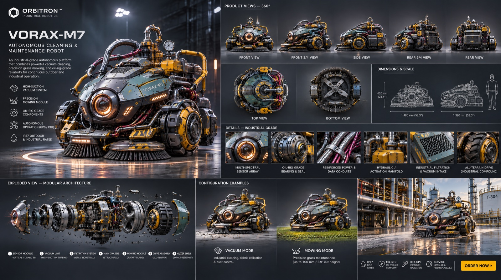
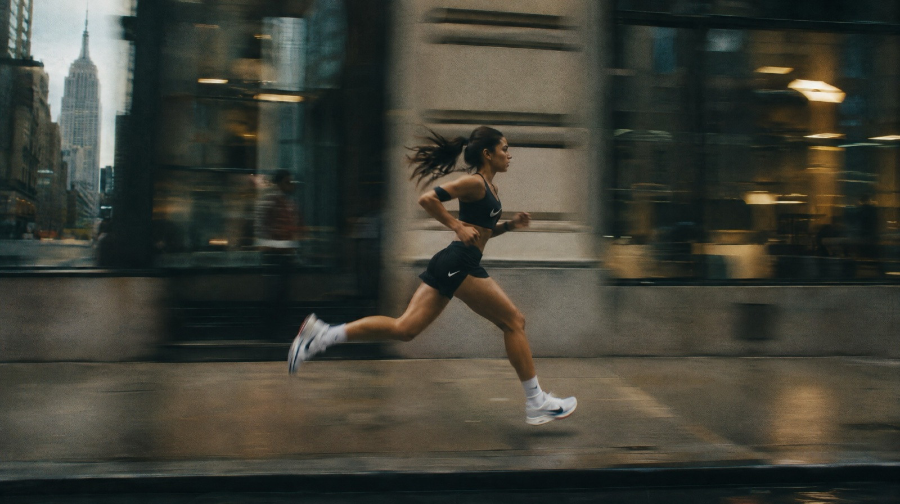
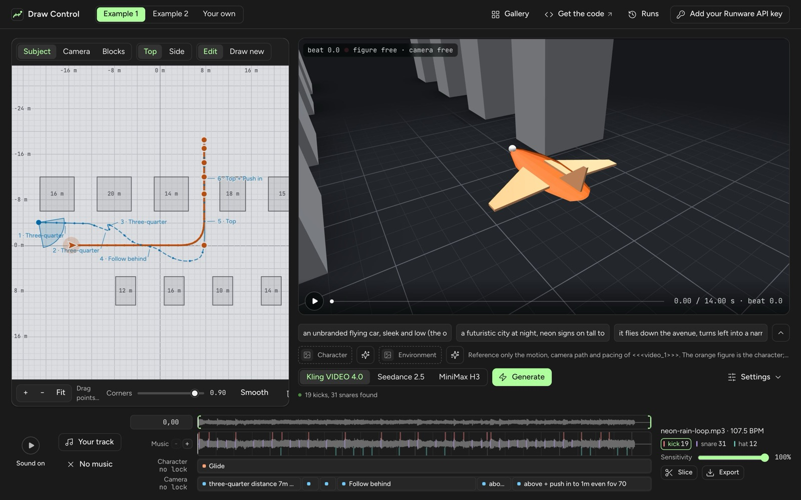
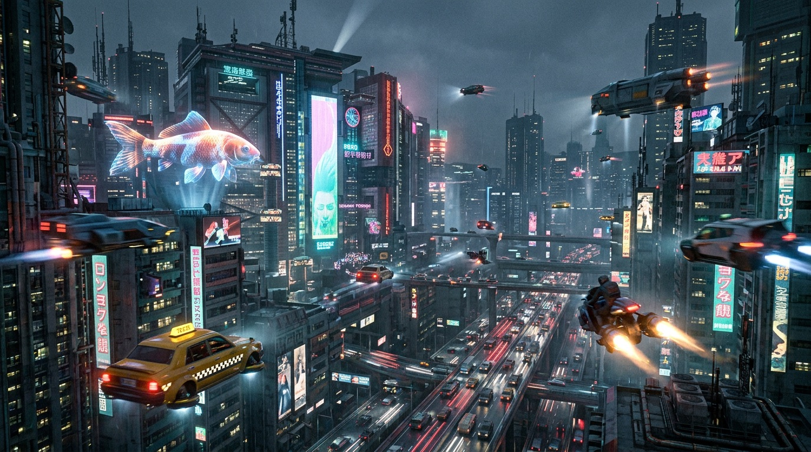
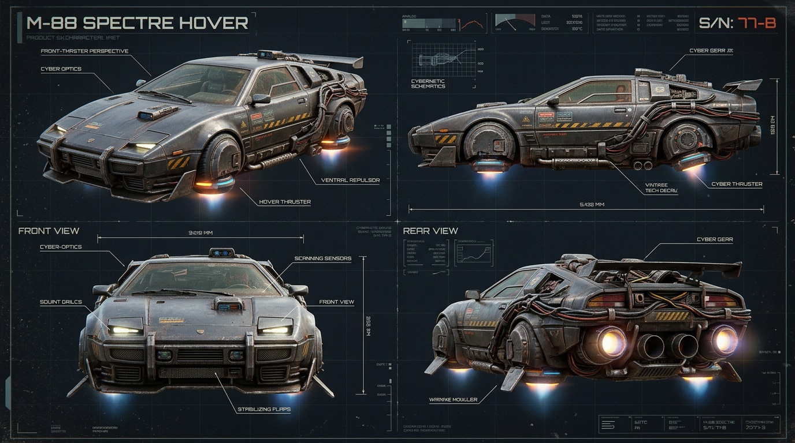
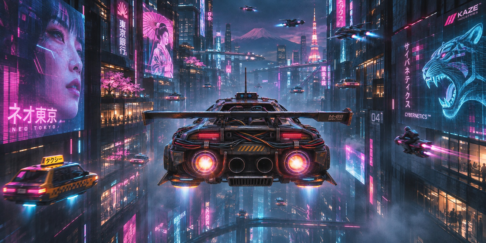

Three briefs, four video models: Seedance 2.5, Kling VIDEO 4.0, MiniMax H3 and FLUX 3
A helmet-cam motocross stunt, a character sheet brought to life and a runner in New York, run on the models side by side, with every prompt shown, what changed between them, and what each clip cost and how long it took.
Radek Rudnicki · draft for the Runware blog · — min read
At a glance
How much control do you have over a video model, and how does each model respond to it? This post works up from words to a drawing, with Seedance 2.5, Kling VIDEO 4.0 and MiniMax H3 on every step and FLUX 3 Video on one.
Text to video, under hard conditions. A helmet-cam motocross backflip, described in words alone.
Images as input. A character sheet given as a reference and read as a storyboard, then a runner in New York from a start image (image to video).
Video to video, with a drawn guide. A new approach to motion control: in Draw Control you draw the subject's path and the camera's path, it renders a guide clip timed to the beat, and the model follows it for motion and framing.
Each brief was written to each model's own prompting guide, and the prompts are shown under every clip, with changes marked. The three briefs are ten-second HD clips generated from Genobi Studio; the guided clips run 11 to 14 seconds. The models ran in parallel and each finished in three to five minutes. A 10 s HD clip cost from $0.80 (MiniMax H3) to $2.32 (Seedance 2.5).
The short version: Seedance 2.5 for fast sports realism, FLUX 3 Video for natural realism and a film look, MiniMax H3 for value, and Kling VIDEO 4.0 in between: close to Seedance on hard motion for less, and the best at following the sound brief. On the drawn guide, Kling followed the path most exactly and Seedance gave the most cinematic take. Every clip shown is the best of a few generations per model, and each brief ends with what the models did well and where they fell short.
The tools behind this post are open source and run with your own Runware key: Draw Control, the motion studio that makes the guide clips (try it live), and Model Arena, which runs one brief across the models and plays the results on one clock.
Draw Control in one minute: draw the paths, render the guide, and compare the models on it.
How the models differ
Before comparing outputs, compare contracts: what each model accepts decides what you can ask of it. The cells come from Runware's model schemas (read 10 Nov; input counts and clip lengths checked again 16 Nov). The frame rate and sound rows were checked on 14 Nov against the makers' own pages. The output frame rate is measured with ffprobe on the original files: every clip in this post came back at a constant 24 fps (241 frames for Seedance, Kling and FLUX, 243 for H3). We never asked for a frame rate, so that is what each model delivers at these settings.
FLUX 3 Video ran on the third brief only. LTX-2.5 sits in the same Arena and is not part of this round.
How we approached it
Same brief, different prompts. None of the three models has a camera field or a negative prompt, and each reads a prompt differently:
Kling wants reference roles first, then the setting, then the beats.
Seedance wants the shot first.
H3 wants plain sentences about the picture, then the sound.
Sending one prompt to three models tests the prompt, not the models. So we started from one brief, ran it, and changed the wording per model where its guide said it would help. The prompts below are the ones actually sent, typos included, with the changes marked against the first version.
Every clip on this page is a pick. We ran each model a few times per brief and show its best take, chosen by eye, so you see each model at its best on the brief. This is an evaluation, so each “Our take” gives credit where a model earned it and names the faults we saw.
Seedance, Kling and H3 ran through Runware's Models API on one key: one async videoInference task per clip, 10 s at HD, the cost Runware reports (includeCost) recorded on the run. Runware sets no hard concurrency limit and finds 2–4 requests at once gives the best throughput (rate limits, checked 15 Nov). So the three models ran in parallel, and the wait was the slowest clip, not the sum of all three.
Brief 1: motocross, camera on the rider's head
A stunt clip in the style of a sports broadcast: rain, mud, a sunset, a commentator, and a backflip seen from a camera on the rider's helmet. This is a hard ask on purpose. A helmet-cam backflip means the whole horizon rolls through the frame, and in our earlier runs on FLUX 3 Video the flip never completed.
“motocross riding, with camera on drivers head looking at the steering bar with interface, dynmic jumps with time warp and slow down half way through the trick … Saying "oh noo" once the here does full backflip and lands full of dirt …”
All three play on one clock and start muted. Press a speaker to hear one clip at a time. Open “Prompt” under a clip for the exact text sent.
Cost is what Runware reported for the run. Time to result is from submission to the run's last update in Genobi, so it is approximate. Seedance's $2.32 is slightly over its published $0.2304/s × 10 s because the clip came back at 10.08 s.
One sentence that kept the camera on the helmet
On the first prompt, all three models cut away to a trackside view for the flip. Adding one clause, “same camera view from the drivers head throughout the video”, plus “no cuts” for Kling, kept Seedance and Kling on the helmet through the whole flip, horizon upside down. Kling's second version was the better of the two. H3 never held the helmet view: across the prompts we tried, it cut to a third-person view for the flip every time.
Seedance 2.5 and Kling VIDEO 4.0 on the revised prompt.
Our take
A deliberately hard stress test, and Seedance handled it best: for sports realism with fast, extreme physics it is still the one to beat. Kling got there too, for less, though it did odd things with the rider ahead; every model nailed the rain, the sunset, the slow-motion and the synced sound, but all of them twisted or cut away during the flip, so the physics is not fully there yet. On sound, Kling edges it: the prompt asks for a commentator, and Kling kept one talking throughout both of its clips, where Seedance brought the voice in only at the very end.
Brief 2: a character sheet as storyboard
One reference image goes to all three models: a character sheet for a small industrial robot, with views from several angles.

The character sheet every model received as its one reference image.
The prompt asks each model to treat the sheet as a storyboard: assemble the unit part by part, move the camera between angles, and stay true to the sheet's look. This tests how well each model keeps to a reference image, and how much product-film camera it gives you without a camera parameter.
“animate this character sheet treating it as storyboard, follow closely the aesthetic and style with smooth camera move from each angle with zooms on details and body parts in 3D realistic view, device setting up moving and assembling with parts, no hard cuts …”
Same reference image for all three. Open a clip's prompt to see how its wording differs from the first.
Our take
We wanted something interesting, sci-fi and industrial-grade, and all three did well with it: Seedance was the most believable, and Kling did really well once we took the effects out of its prompt. For the price, MiniMax H3 wins this one.
Brief 3: a runner in New York, with FLUX 3
An athletic advert: a runner crossing a New York City pavement, fine film grain, strength and speed in the stride. This brief adds FLUX 3 Video beside Kling and H3, and it is the one Seedance could not do. Each model started from the same reference still.

The reference still the runner clips started from.
How the still goes in differs by model, as the table shows: Kling takes it as a reference image, H3 as its first frame, and FLUX as a start image. The prompt that went with it is short.
“nike advert, runner in the new york city. Moving accross pavement, fine greain, visible logo, characters strength and speed”
Kling VIDEO 4.0, MiniMax H3 and FLUX 3 Video on one clock. Seedance 2.5 returned no clip.
Our take
FLUX looked the most realistic and kept the film look throughout, with great weather, a wet pavement and passers-by we had not asked for, though faces turn a little plastic in close-up. Kling was good but more sterile and stutters at around eight seconds, and H3 was lower resolution and distorted, yet it was the only one that held the shot instead of cutting away.
Drawing the move, with Draw Control
The three briefs steer the camera with words. This one steers it with a drawing. In Draw Control you draw the subject's path and the camera's path on a map, block out the scene with simple grey shapes, and drop in a track. The page renders a guide clip, a stand-in figure with the camera move and the blockout timed to the beat, and the video model follows it for motion and framing while the prompt and the reference images decide the look.

The drawing: the subject's path in orange and the camera's path in blue on the map, the guide preview beside it, and the camera lane under the track.
The subject is a flying car on purpose. The stand-in in the guide is a plane, so a car tests whether a model follows the drawn move with a different shape. The references were built in four steps, with a mix of image models:
An environment: a city at night.
The car, as a sheet showing every angle, made with GPT Image. It went in as the character reference.
The car placed in the environment.
That picture re-framed to the camera view of the guide's first frame, to get the perspective. It went in as the first frame, with the environment as the second reference.

1. The environment.

2. The car, every angle.

3 and 4. The car in the city, in the guide's first view.
The same guide and the same references went to three models: Seedance 2.5, Kling VIDEO 4.0 and MiniMax H3. The first two clips in the player below are the inputs: the drawing played back in Draw Control, and the guide clip it renders, which Draw Control exports as an MP4 together with its audio, its first frame and its beat grid. The three under them are the models. Every clip runs about 14 seconds at 24 fps.
The shot description is the same for all three models: a subject, a setting and an action. Draw Control adds one line telling the model to take only the motion, the camera path and the pacing from the guide.
“an unbranded flying car, sleek and low (the orange figure; white marks its nose), a futuristic city at night, neon signs on tall towers, light rain on empty streets, it flies down the avenue, turns left into a narrow gap between the towers and comes down to land between the buildings”
The drawing and the guide on top, then Seedance 2.5, Kling VIDEO 4.0 and MiniMax H3 following the guide, all on one clock.
Our take
With this one prompt and this guide, Kling followed the drawing best, Seedance came in between and MiniMax H3 followed it least. Kling is precise: the camera goes where the drawing says, end to end. Its picture reads a little like a game, and the reflections are really good. Seedance kept closer to the reference images than to the guide, and it came out the most cinematic: fog, rain and steam off the car, the audio kept, and a smooth camera move of its own that was good to watch. Overall we call Kling and Seedance a tie.
H3 has really nice light, the engines above all, but it did not pick up the spatial moves from the guide. Our guess is that it would need a LoRA or a fine-tune on top to do this. All three ran on one prompt, so each has room left with a prompt tuned to it. The first frame was made for an earlier version of the guide, and the clips still worked well after the guide changed.
Example 2: one guide, three subjects
The second example turns the test round: one guide, different subjects. The drawing is a straight run down a street at a steady 4 metres a second, with one small hop on a kick. The camera starts low and close, pulls back alongside as the subject passes behind a row of blocks, then rises to a high view of the whole street. The stand-in is a plain upright figure, so the same guide can carry a person or a vehicle.
Only the shot description and the references change from clip to clip: an anime skater, a runner in New York and a forklift on a factory floor. The skater ran on two models, Kling VIDEO 4.0 and Seedance 2.5; the runner is Kling and the forklift is Seedance. The guide runs 12 seconds at 24 fps on an 11-second drum and bass loop.
The drawing and the guide on top, then the anime skater on Kling VIDEO 4.0 and on Seedance 2.5, the runner and the forklift, all on one clock.
Our take on Example 2: Radek's full verdict to come. So far: Seedance did very well on the forklift. A first read from the frames: the forklift opens low on the front wheel, pulls back alongside behind the pillars and rises to the high view, as drawn. The two Kling clips, the skater and the runner, open low and close and keep the guide's order. The Seedance skater opens on the face, then picks the guide up and turns the grey blocks into kiosks the skater passes behind.
Where this comes from. One paragraph and two or three stills. Earlier audio-reactive work: the towers piece and the June flowers piece made in Genobi, and the camera-director workflows.
Which model for which job
Observations from a small set of runs, not a benchmark. Each clip is the best of a few generations per model.
For fast sports realism, Seedance. For natural realism and a film look, FLUX. For value, MiniMax H3, which did more than its price suggests. Kling sits in between: close to Seedance on hard motion, for less, and the one that followed the sound brief best. For following a drawn guide, Kling.
Seedance 2.5Best at
Sports realism with fast, extreme physics: the strongest motocross clip. The most believable take on the robot sheet too, and the most cinematic clip on the drawn guide.
Where it fell short
Guardrails got in the way on the runner: content moderation rejected every run of the branded brief, so it has no clip there. The commentator we asked for arrived only at the very end. The flip still twists. The highest price of the set, $2.32 a clip.
Kling VIDEO 4.0Best at
Hard motion close to Seedance for $1.57 a clip, and sound: the commentator runs through both motocross clips, in sync. Strong on the robot sheet, and it followed the drawn guide exactly.
Where it fell short
Prompt adherence wavered: the rider ahead did things we had not asked for, and its effects gave unexpected results until we took the effects wording out of the prompt. On the runner it reads sterile in the zooms and stutters at around eight seconds.
MiniMax H3Best at
Value: $0.80 a clip, and the pick for the robot sheet at that price. On the runner it was the only model that held the shot from start to finish.
Where it fell short
The runner came back looking lower resolution and distorted. It never held the helmet view on the motocross brief, across every prompt we tried, and it did not pick up the spatial moves from the drawn guide.
FLUX 3 VideoBest at
Natural realism. It kept the film look throughout, with great weather, a wet pavement and passers-by that made sense in the scene. One brief only in this round.
Where it fell short
Faces turn a little plastic in close-up, and it cut to other shots we had not asked for.
Shared across the set: rain, sunset, slow motion and synced sound came easily to every model, and the full helmet-cam backflip is still out of reach for all of them.
From$0.80per 10 s HD clip (MiniMax H3)
About3–5 minto a clip, three models in parallel
3models on one key, one API
Kling VIDEO 4.0
Reference videos carry the camera path. $0.157 per second at 720p.